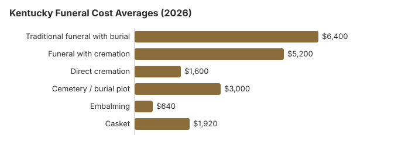

Funeral Costs in Kentucky: What Families Pay in 2026
A traditional funeral in Kentucky costs about $6,400 on our 2026 estimate, 23% less than the $8,300 national median, while a service with cremation runs near $5,200 and direct cremation starts around $1,600. Only 40% of Kentucky families cremate, well under the national rate, so burial is still the usual choice and cemetery charges matter. This page covers those prices, how to order a $6 Kentucky death certificate, county and veterans burial help, and the state rules that apply.
Kentucky Funeral Costs, Line by Line
Our Kentucky item estimates follow. The Board of Embalmers and Funeral Directors licenses homes, but each home sets its own prices.
| Item | Estimate | Usual range |
|---|---|---|
| Traditional funeral with burial | $6,400 | $4,800 – $8,320 |
| Funeral with cremation | $5,200 | $4,160 – $6,760 |
| Direct cremation | $1,600 | $1,120 – $2,240 |
| Cemetery / burial plot | $3,000 | $1,500 – $6,000 |
| Embalming | $640 | $500 – $1,500 |
| Casket | $1,920 | $640 – $5,120 |
Where these numbers come from: our own cost model for Kentucky, not a canvass of funeral homes, so treat them as estimates rather than a quote or professional advice. See our method and the disclaimer.
State sources: KRS 72.450; 17 KAR 4:040.

Kentucky Cremation and Burial in Depth
Separate pages cover each choice:
Cremation Costs in Kentucky
Four in ten Kentucky families (40%) cremate. Direct cremation begins near $1,600 and cremation with a service near $5,200; urns and scattering are covered there too.
Burial Costs in Kentucky
With a plot near $3,000 plus casket, vault, marker and opening, a Kentucky burial comes to $14,520-$19,020.
Help Paying in Kentucky
- Kentucky fiscal courts may pay for an unclaimed burial or cremation under KRS 72.450, and an indigent veteran's funeral can be reimbursed up to $1,000 by the state Department of Veterans Affairs (17 KAR 4:040).
- The $255 Social Security death payment goes only to an eligible surviving spouse or child; in Kentucky, as elsewhere, they apply by calling 1-800-772-1213 within two years of the death.
- For a Kentucky veteran, the person who covered the funeral bill claims the VA allowance on Form 21P-530EZ: up to $1,032 for burial plus $1,032 for a plot when a non-service-connected death falls on or after October 1, 2026. Eligibility rules for Kentucky families are in our veteran burial benefits guide.
- For Medicaid, charities and other sources, see our payment assistance guide and the funerals with no money page.
Educational Resources
- Funeral Consumers AllianceIndependent nonprofit consumer advocacy for funeral rights
- FTC Funeral RuleThe federal rule protecting funeral consumers
- Funeral Insurance GuideCompare final expense and burial insurance options
- Best Burial Insurance CompaniesSide-by-side comparison of top burial insurance providers
- Payment Assistance GuideGovernment programs and financial help for funeral costs
- Insurance Plan ComparisonCompare coverage, premiums, and payout speed across providers
Compare Funeral Costs
- Average Funeral Cost in 2026National cost breakdown with real prices
- Cremation vs. Burial Cost ComparisonSide-by-side price comparison to help you decide
- Funeral Cost BreakdownEvery line item explained: know what you're paying for
- Cheapest Funeral OptionsLower-cost alternatives, with typical price ranges
- Direct Cremation: Most Affordable OptionNFDA 2023 median $2,645 with a family-supplied container (latest available)
- How to Compare Funeral PricesStep-by-step guide to getting the best price
Federal Protections in Kentucky
If you believe a funeral home in Kentucky has violated these rights, you can file a complaint with the FTC at ftc.gov or contact the Funeral Consumers Alliance for guidance. To raise a problem with a Kentucky funeral home, contact the board at 502-426-4589 or KBEFD@ky.gov, weekdays from 8:00 a.m. to 4:30 p.m.
Kentucky's Lower-Cost Options
| Choice | Approx. Cost | Covers |
|---|---|---|
| Direct cremation | $1,600 | Cremation with no viewing or service; Kentucky needs a permit but sets no fixed wait (KRS 213.081; KRS 213.076(7)). |
| Direct burial | $3,200 | No embalming or viewing; a Kentucky cemetery bills the plot and opening on top. |
| Green burial | $3,520 | A shroud or plain casket without embalming, at a Kentucky cemetery that accepts it. |
| Cremation + memorial | $5,200 | Cremation, then a memorial later |
| Traditional funeral | $6,400 | Viewing, funeral and burial |
Kentucky Summers and Embalming
Because Kentucky is in the South and summer heat matters, embalming timelines come up earlier in the arrangement conversation than in cooler regions. Embalming is still not legally required in Kentucky in most circumstances; refrigeration is an alternative. If a Kentucky funeral home asks you to agree to embalming quickly, slow down and ask whether it is a legal requirement or the home's own preference; the Kentucky Board of Embalmers and Funeral Directors (502-426-4589) can confirm the rule.
What Sets Kentucky Prices
No single number sets a Kentucky quote. Local living costs, the number of homes competing nearby, the property costs of the funeral home and the steps state law requires all feed in. Southern prices usually fall below the $8,300 US median, and in Kentucky a city home and a rural one commonly differ by 10-30%.
At 40%, Kentucky's cremation rate is 23.4 points below the 63.4% national rate that NFDA projected for 2025.
Louisville, Lexington and Other Kentucky Cities
Louisville and Lexington homes tend to charge more than rural ones; here are our city estimates:
Kentucky: Burial or Cremation?
Cremation
- Direct cremation near $1,600
- Near $5,200 with a service
- No plot to buy
- A memorial whenever suits you
- 40% of Kentucky families choose it
Traditional Burial
- Funeral near $6,400
- Plot near $3,000
- A vault or liner is usually required
- A grave the family can visit
- Metal casket: around $2,500 nationally at the median (NFDA 2023 General Price List Study); Kentucky prices depend on the seller
Kentucky Charges Worth Questioning
- Embalming described as required. No Kentucky statute or rule requires it for burial or cremation, so ask which rule the home means.
Getting Started on a Kentucky Funeral
Taken roughly in this order, these steps head off the costliest mistakes in Kentucky:
- Choose burial or cremation: cremation in Kentucky or burial in Kentucky.
Kentucky death certificates cost $6 each
The Office of Vital Statistics in Frankfort charges $6 for every certified copy of a death certificate, the first and each extra alike (Kentucky Cabinet for Health and Family Services, certificate purchase options; checked October 29, 2026). The fee is a search fee under 901 KAR 5:050, so it is kept even if no record is found. State files go back to January 1911.
- In person: 275 East Main Street, Frankfort, entering from the Martin Luther King Blvd. Side of the Human Resources Building, 8 a.m. to 4:30 p.m. Eastern on weekdays. Orders that arrive after 3:45 p.m. Eastern are handled the next business day, and a drop box at the visitor entrance takes applications after hours.
- By mail: send the application with a check or money order to the "Kentucky State Treasurer" at 275 E. Main St, 1E-A, Frankfort, KY 40621; cash is not accepted, and processing can take up to 30 working days.
- Online or by phone: VitalChek handles card orders at 800-241-8322, option 1, and adds its own card and shipping fees.
Ten copies cost $60 at the state rate. A new certificate can be delayed if the funeral director or the doctor is slow to file the original in Frankfort, so ask the home when it expects to file.
Kentucky's funeral board, county help and veterans cemeteries
Kentucky funeral directors and funeral homes are licensed by the Kentucky Board of Embalmers and Funeral Directors; to verify a license or make a complaint, call 502-426-4589.
Kentucky is not on the Funeral Consumers Alliance list of nine states that make families use a funeral director for part of after-death care, so a family may carry out much of a funeral on its own, provided the death certificate and the disposition permit are filed.
Before a cremation, Kentucky requires a permit but sets no fixed waiting period (KRS 213.081; KRS 213.076(7)).
When no one can pay
There is no statewide indigent-funeral program. Under KRS 72.450 the coroner contacts the next of kin, and if nobody claims the body, the fiscal court, or a consolidated or urban-county government, may pay for a burial or cremation. The Kentucky Department of Veterans Affairs can reimburse up to $1,000 for an indigent veteran's funeral (17 KAR 4:040). (Source: KRS 72.450; 17 KAR 4:040.) Social Security's $255 lump sum is separate: an eligible spouse or child claims it within two years, and the funeral home never receives it.
Veterans cemeteries in Kentucky
Camp Nelson National Cemetery (859-885-5727), Lebanon National Cemetery (270-692-3390) and Mill Springs National Cemetery (859-885-5727) are booked by the funeral home through the VA's National Cemetery Scheduling Office (800-535-1117). Kentucky also runs five state veterans cemeteries that families contact directly: Central (270-351-5115), North (859-823-0720), Northeast (606-929-5354), Southeast (606-672-2750) and West (270-889-6106).
Kentucky steps
- Ask each Kentucky home for its General Price List; when you visit, the FTC Funeral Rule obliges it to give you one.
- Make the embalming and viewing decision early, since dropping both is usually the biggest single saving.
- Before signing anything, ask the county coroner and fiscal court about help, and for a veteran have the home apply to KDVA's indigent burial program.
- For a veteran, have the home check Camp Nelson National Cemetery before buying a private plot.
- Report a home that hides or ignores its price list to the board at 502-426-4589.
Frequently Asked Questions
How much is a Kentucky funeral in 2026?
Budget about $6,400 for a traditional Kentucky funeral, 23% below the $8,300 US median. A service with cremation is about $5,200, direct cremation from $1,600, and a burial adds roughly $3,000 in cemetery costs.
Does cremation cost less than burial in Kentucky?
Yes. Direct cremation, around $1,600, is about $4,800 less than the $6,400 traditional funeral, and roughly $7,800 less once some $3,000 of cemetery charges is added.
What protections does a Kentucky family have?
Under the FTC Funeral Rule (16 CFR 453), a Kentucky funeral home has to hand you an itemized General Price List, give prices over the phone when asked, and take a casket or urn bought somewhere else with no handling charge. Kentucky is not among the nine states the Funeral Consumers Alliance lists as requiring families to hire a funeral director. Complaints about a Kentucky funeral home go to the Kentucky Board of Embalmers and Funeral Directors (502-426-4589).
Where can a Kentucky family cut costs?
The biggest savings in Kentucky come from choosing direct cremation or immediate burial, skipping embalming and a viewing, and holding a memorial later at a church, park or home instead of the funeral home's chapel. Buy the casket, urn or marker from an outside seller if it is cheaper; no Kentucky funeral home may refuse it or add a fee.
Does Kentucky law require embalming?
No. Kentucky has no statute or regulation requiring embalming for burial or cremation. The only related rule is for crematories: an unembalmed body may not be held at a crematory that lacks refrigerated holding (KRS 367.97511).
A Kentucky funeral home that insists on embalming before a viewing is applying its own policy, not state law, and it must tell you so before charging the roughly $640 our Kentucky estimate shows. Kentucky's Board of Embalmers and Funeral Directors (502-426-4589) takes it from there if it does not.
Do Kentucky funerals cost less than the US average?
Less expensive. Set this page's Kentucky table beside the national medians of $8,300 for a funeral with viewing and burial and $6,280 with cremation (NFDA 2023); the price lists you gather will still tell you more.
What is the least a Kentucky funeral can cost?
Direct cremation, from roughly $1,600. For a burial: Direct burial is the next step up at about $3,200, which is $3,200 below a traditional Kentucky funeral.
How do I find a lower-cost Kentucky funeral home?
Phone several Kentucky homes; the FTC Funeral Rule requires them to give prices by phone. You can supply a casket or urn bought elsewhere, and the home may not add a fee.